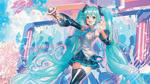
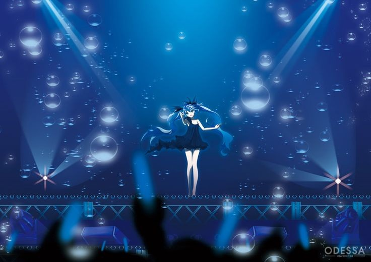

Hatsune Miku é uma vocaloid lançada pela Crypton Future Media em 2007. Usando tecnologia de síntese de voz, ela se tornou um ícone global na música e na cultura digital.
Hatsune Miku se apresenta em shows holográficos ao redor do mundo, proporcionando uma experiência ao vivo inigualável.
A comunidade de fãs de Hatsune Miku é global, com fanarts, criações musicais e cosplays inspiradores compartilhados diariamente.